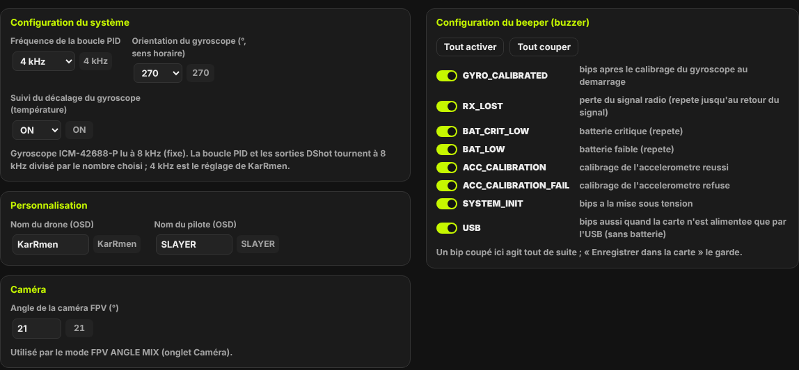
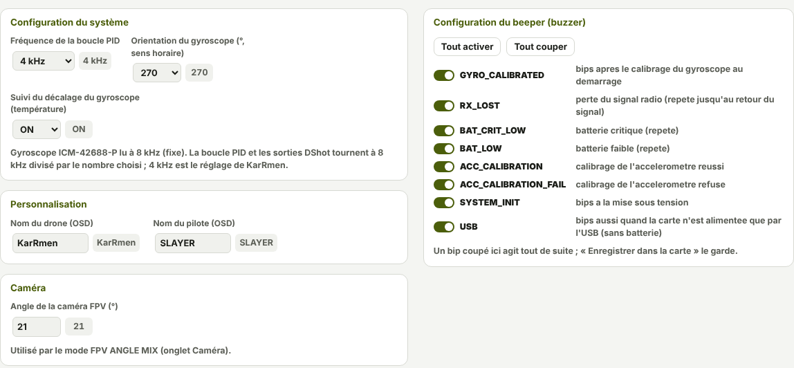
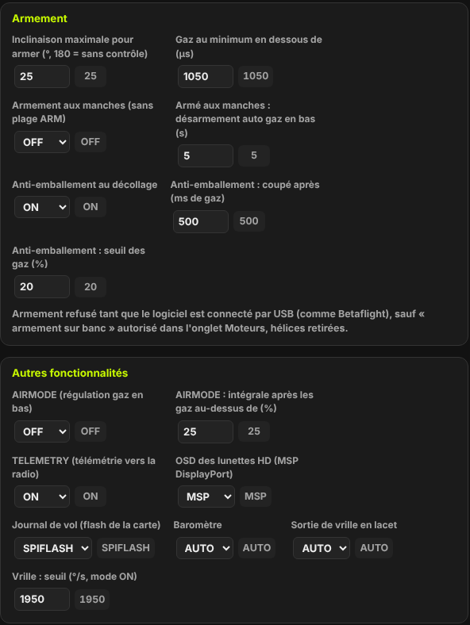
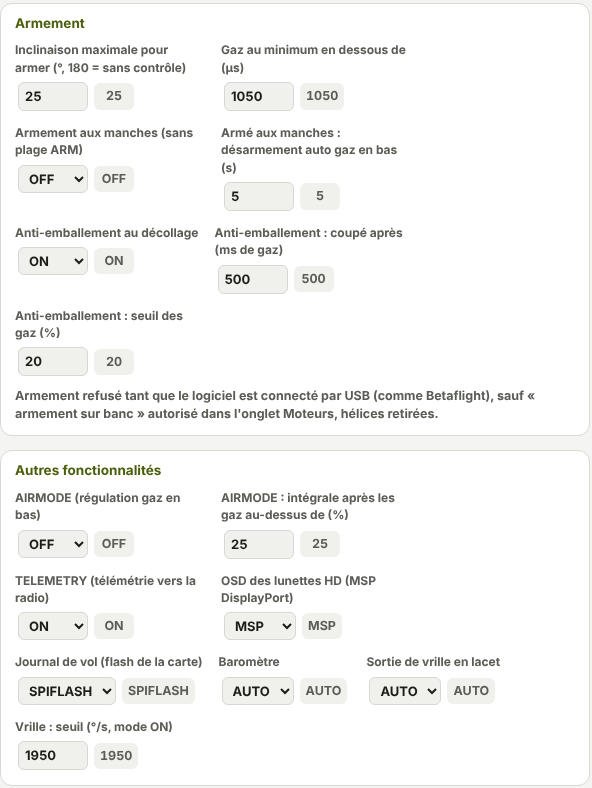

TRUEGLIDE
TRUEGLIDE Onglet Configuration
L'onglet Configuration rassemble les réglages généraux de la carte : fréquence de la boucle, noms affichés dans les lunettes, angle de la caméra, conditions d'armement, AIRMODE et autres fonctions, bips du buzzer.
La page
Les cadres de réglages sont à gauche ; la Configuration du beeper (buzzer) est à droite. Chaque réglage
montre son nom de Betaflight (par exemple small_angle), la valeur à changer, et à côté, en gris, la
valeur enregistrée dans la carte.
- Lire la carte : relit toutes les valeurs.
- Tout revenir : oublie les changements pas encore enregistrés.
- Enregistrer dans la carte : garde les changements après un redémarrage.
Sous les boutons, une ligne dit si les valeurs de l'onglet sont celles enregistrées, ou combien diffèrent (repère orange).


Configuration du système
| Réglage | Ce qu'il fait | Défaut |
|---|---|---|
Fréquence de la boucle PIDpid_process_denom | Le gyroscope ICM-42688-P est lu à 8 kHz (fixe). La boucle PID et les sorties DShot tournent à 8 kHz divisé par ce nombre : 4 kHz, 2,67 kHz… jusqu'à 1 kHz. La liste commence à 4 kHz, le plus rapide sur ce processeur F405 avec le DShot bidirectionnel. | 2 (4 kHz) |
Orientation du gyroscopegyro_align | Rotation du capteur sur la carte, en degrés, sens horaire vu de dessus : 0, 90, 180 ou 270. | celle de la carte (270 sur la SpeedyBee F405 Mini) |
Suivi du décalage du gyroscopegyro_cal_tracking | Ajuste le décalage du gyroscope quand la carte est immobile, pour suivre la température. Réduit la dérive du cap. | ON |
Personnalisation et caméra
- Nom du drone (
craft_name) et Nom du pilote (pilot_name) : 16 lettres au plus, affichés par l'OSD des lunettes. KarRmen :KarRmenetSLAYER. - Angle de la caméra FPV (
fpv_mix_degrees) : de 0 à 90°, 0 par défaut. Il sert au mode FPV ANGLE MIX (onglet Caméra). KarRmen sous Betaflight : 21°.
Armement


| Réglage | Ce qu'il fait | Défaut |
|---|---|---|
Inclinaison maximale pour armersmall_angle | Au-delà de cet angle, en degrés, l'armement est refusé. 180 : pas de contrôle (réglage de KarRmen). | 25 |
Gaz au minimum en dessous demin_check | Les gaz doivent être sous cette valeur, en µs, pour armer. | 1050 |
Armement aux manchesenable_stick_arming | Armer gaz en bas, lacet à droite pendant 1 s, s'il n'y a pas de plage ARM dans l'onglet Modes. | OFF |
Désarmement auto gaz en basauto_disarm_delay | Armé aux manches : désarme seul après ce temps gaz en bas, en secondes (0 = jamais). | 5 |
Anti-emballement au décollagerunaway_takeoff_prevention | Désarme si la
régulation sature longtemps au décollage. Coupé après 500 ms de gaz au-dessus de 20 % (réglages
runaway_takeoff_deactivate_delay et …_throttle_percent). | ON |
Autres fonctionnalités
| Réglage | Ce qu'il fait | Défaut |
|---|---|---|
AIRMODEairmode | La régulation garde la main gaz en bas. Même effet que
feature AIRMODE. KarRmen vole avec AIRMODE. | OFF |
AIRMODE : intégrale après…airmode_start_throttle_percent | L'intégrale ne s'active qu'après un passage des gaz au-dessus de ce pourcentage. | 25 |
TELEMETRYtelemetry | Télémétrie CRSF vers la radio (onglet Télémétrie radio). | OFF |
OSD des lunettes HDosd_displayport_device | OSD par MSP DisplayPort sur le port vidéo HD. KarRmen : MSP. | NONE |
Journal de volblackbox_device | Journal dans la flash de la carte (SPIFLASH) ou aucun. | SPIFLASH |
Baromètrebaro_hardware | AUTO : détecté au démarrage ; NONE : pas de baromètre. | AUTO |
Sortie de vrille en lacetyaw_spin_recovery | OFF, ON ou AUTO (seuil tiré du
taux maximal du lacet). En ON, seuil réglé par yaw_spin_threshold. | AUTO ; seuil 1950 °/s |
Les autres cadres
- Capteurs et horizon : correction de l'horizon en roulis et en tangage (
acc_trim_roll,acc_trim_pitch, en dixièmes de degré), manche de lacet inversé, gaz ajoutés en virage en mode ANGLE (thr_corr_value,thr_corr_angle). Le calibrage de l'accéléromètre se fait dans l'onglet Installation. - ALTHOLD (baromètre) : vitesse de montée, zone morte du manche des gaz, gaz du stationnaire, gaz minimaux et maximaux, inclinaison maximale, P, I, D, F de l'altitude, lissage. L'altitude est remise à 0 à chaque armement.
- Profils et journal : profil PID actif et profil de taux actif (1 à 6), part des boucles PID enregistrées dans le journal (1 kHz au plus).
Le beeper
Le cadre Configuration du beeper (buzzer), à droite, a un interrupteur par bip, avec son nom et sa description : GYRO_CALIBRATED, RX_LOST, BAT_CRIT_LOW, BAT_LOW, ACC_CALIBRATION, ACC_CALIBRATION_FAIL, SYSTEM_INIT, USB. Seuls les bips que le firmware sait jouer sont listés.
- Tout activer et Tout couper agissent sur tous les bips.
- Un bip coupé agit tout de suite ; Enregistrer dans la carte le garde.
En ligne de commande : beeper liste les bips, beeper -RX_LOST en coupe un,
beeper RX_LOST le remet, beeper -ALL / beeper ALL pour tous, puis
save. Par défaut, tous les bips sont actifs, comme sur KarRmen.